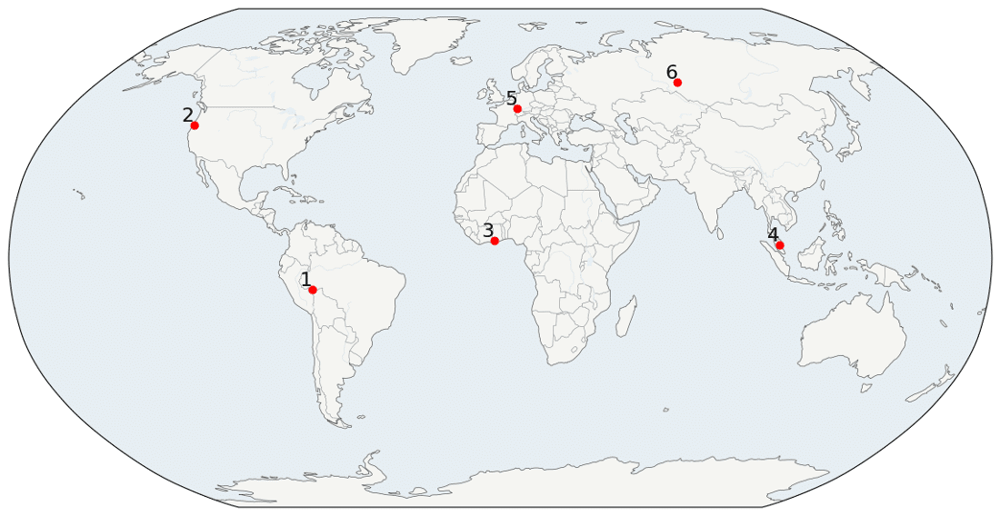
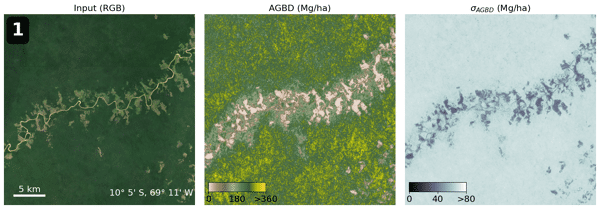
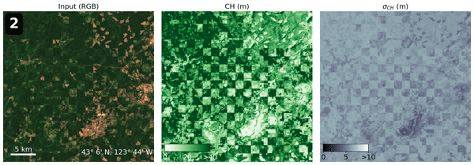
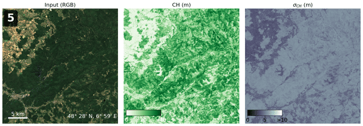
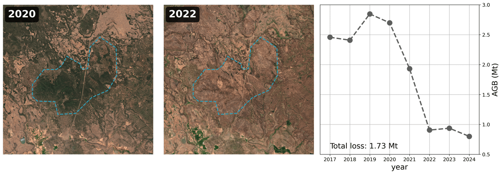

Over the past couple of years, I've been working on a deep learning model for the estimation of Aboveground Biomass, Canopy Height and Canopy Cover from high resolution, multi-sensor satellite imagery.
Forests of the world store up to 500 petagrams (Pg) of carbon in their aboveground biomass, acting as a major carbon sink and playing a vital role in the stability of global ecosystems. Regular measurement of carbon is critical for scientific research and the development of carbon markets but has been largely limited to small scale projects with irregular updates due to a lack of ground-based assessments. Our recent work aims to address these gaps and provide a framework for globally-consistent but locally-tuned carbon monitoring.
Biomass, canopy height and cover dataset: Download · View samples
Forest mask dataset: Download · View data
Figure 1: Global maps of Aboveground Biomass, Canopy Height and Cover in a composite view.
Our Approach
The modeling approach unifies the prediction of aboveground biomass (AGBD), canopy height (CH), canopy cover (CC), and their respective uncertainties into a single model. The model is trained on over one million globally distributed training samples consisting of 14 million image scenes from Sentinel-1 and Sentinel-2 and 67 million individual LiDAR ground truth points from the Global Ecosystem Dynamics Investigation (GEDI) instrument.
Despite the global coverage and billions of point measurements by the GEDI instrument, only a small fraction of the land surface has been scanned by LiDAR at high (≤ 10 m) resolution, offering estimates for the vertical profiles of trees. It is therefore vital to develop models which can fill in the gap through additional data sources, such as remote sensing imagery, while learning from the many point measurements provided by GEDI.
Our approach consists of fusing multiple data sources such as Sentinel-1, Sentinel-2, Digital Elevation Model (DEM) from the Shuttle Radar Topography Mission (SRTM) and geographic location for a complementary and rich set of input information. We built a custom AI model which processes the stack of input imagery and generates continuous maps of AGBD, CH and CC. It is trained on millions of globally distributed samples and ground truth gathered from the GEDI Level-2A/B as well as Level-4 dataset using a weakly supervised approach. Our model is globally deployable and able to estimate all three prediction variables at once.
Due to the inherent uncertainty of the GEDI ground truth, our model also estimates the standard error for each of the variables. This is a critical improvement and necessary to enable downstream uncertainty quantification for carbon monitoring applications.
How Accurate Is Our Model?
On top of training the model on vast amounts of data covering diverse ecosystems, we also conducted extensive performance evaluations on a held-out test dataset (see Figure 2) as well as third-party datasets providing on-the-ground measurements. We achieve a mean absolute error (MAE) of 26.1 Mg/ha (3.7 m, 9.9%) for AGBD (CH, CC), significantly outperforming previously published state-of-the-art approaches.

Figure 2: Model performance against a held-out test dataset for AGBD (left), CH (middle) and CC (right) demonstrating state-of-the-art results.
The practicality of the model is demonstrated by validating its predictions against data samples collected with high precision and/or on the ground, offering an independent data source. The model shows reasonable agreement with these third-party datasets across a wide range of AGBD and CH values. Because local measurements involve extensive human labor and are not readily available at scale in the public domain, this approach is used to generate consistent, global-scale estimates of forest carbon.
This can fill gaps where local solutions are not available, serve as a tip-and-cue mechanism to prioritize ground studies, and facilitate comparative studies where consistent methodology is required. In addition, we demonstrate the feasibility of fine-tuning the model on local conditions due to its multi-head architecture allowing the prediction of relative height (RH) metrics required by local allometric equations.
Open Data Access
We are committed to providing intelligence and insight that help mitigate the impacts of climate change and believe that it is of utmost importance to give open access to the datasets generated as output of our model to the academic and research community.
We therefore released the global maps of AGBD, CH and CC for the year 2023 at 10 m resolution, amounting to a total of 5 TB of data, available through the Zenodo repository.
In Figure 3 we provide a few samples of the model's output at different locations around the world. They cover a range of ecosystems, and the model can accurately estimate a wide range of values of AGBD, CH and CC. Even in challenging environments where the optical input composite is imperfect due to cloud remnants, the model performs well due to the fusion of multiple input sources.

Figure 3: Illustration of model outputs at 6 locations covering different biomes.

Figure 3a: Aboveground Biomass at locations 1 (Brazil) and 4 (Malaysia) and their uncertainties.


Figure 3b: Canopy Height at locations 2 (Oregon) and 5 (France) and their uncertainties.
Figure 3c: Canopy Cover at locations 3 (Ghana) and 6 (Russia) and their uncertainties.
The open data can be integrated into any geospatial analysis platform which supports GeoTIFF format. The animation below shows the dataset within the EarthDaily platform. It demonstrates the spatial extent as well as the high resolution and quality of maps available globally, even in challenging areas where cloud coverage is high.
Global AGBD dataset visualized in the EarthDaily platform.
Applications
Given the versatile capabilities of the model, a variety of use cases are imaginable which use one or a combination of multiple output channels. While traditional approaches often rely on task-specific models, our unified approach provides common variables often used in these sub-tasks. Below we illustrate two use cases which make use of this capability.
Carbon Loss
Our model can be used for forest classification (CH and CC variables), deforestation detection (change in forest class), and association with carbon loss (AGBD variable). Here we ran a simple analysis measuring AGBD every year from 2017 to 2024 over an area that was affected by the 2021 Bootleg Fire in Oregon.
The images below show the area before the fire (2020) as well as after the fires in 2022 during the summer. The impact of the fires is clearly visible in the loss of vegetation. From our model's aboveground biomass estimates in each year within the highlighted polygon, we measure a drop from 2.6 Mt (averaged from 2017 to 2020) to 0.87 Mt (averaged from 2022 to 2024) — corresponding to a loss of 1.73 Mt of biomass or 0.81 Mt of Carbon, as illustrated in Figure 4.

Figure 4: Tracking changes in biomass due to forest loss events illustrated by the 2021 Bootleg Fire in Oregon.
Global Forest Mask
While the exact conditions for classifying forest may vary regionally, at global scale a widely used definition relies on canopy height and canopy cover — both of which our model is capable of predicting. This enables us to generate global forest masks from the model outputs based on the condition:
as illustrated in Figure 5.

Figure 5: Illustration of deriving the forest mask layer from the model's estimate of CH, CC and their uncertainties.
We subtract one standard deviation from the source variables as estimated by our model in order to compensate for a slight over-estimation at low values of CH and CC, resulting in a more conservative classification of forest. We used the global model deployment to generate a forest mask for 2023 and made the data publicly available on Zenodo. Figure 6 shows a down-sampled version of this dataset. We also provide an interactive visualization of the dataset here.
Figure 6: Global forest mask derived from the model's outputs for the year 2023.
The ability to create updated forest masks at global scale is important to accurately track deforestation at high temporal resolution, and our model adds a crucial aspect to fulfilling this challenging task.
Conclusion
We present a novel deep learning-based computer vision model that unifies the prediction of several biophysical indicators that describe the structure and function of vegetation in multiple ecosystems and their respective uncertainties. The model input consists of multiple satellite image sources including Sentinel-1 backscatter, multispectral Sentinel-2, and topographic information from SRTM.
Previous studies have focused on the estimation of single variables while uncertainty estimations were unavailable or conducted in separate studies. Training a single model for the prediction of AGBD, CH, and CC with a shared encoder-decoder architecture provides richer information for the extraction of common features. Additional benefits include efficient and cost-effective model deployment at scale, which are important factors for global monitoring efforts and allow for a wide range of downstream tasks and derived products.
We demonstrated excellent skill of the model by rigorous evaluation on a held-out test dataset as well as against third-party datasets without further fine-tuning, attaining performance that is consistent with or exceeds expectations for such data. In addition, we generated and open-sourced global maps of AGBD, CH, CC and a derived forest mask at 10 m resolution, extending the coverage of GEDI observations to a latitude range of 57°S to 67°N, for the year 2023.
We made two global datasets at 10 m resolution for the year 2023 available through public repositories for research and academic use under the Creative Commons Attribution Non Commercial 4.0 International license.